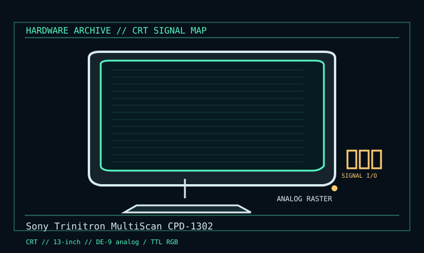

[ INDIVIDUAL COMPONENT // DISPLAYS ]
Sony Trinitron MultiScan CPD-1302
13-inch Trinitron multiscan display, early 1990s. CRT

IDENTIFICATION: Verify the complete model/revision on the rear label. Specifications are tied to the cited manual/specification; variant-dependent values are qualified rather than generalized.
Specifications
| Catalog subcategory | Crt Displays |
|---|---|
| Exact product/family | Sony Trinitron MultiScan CPD-1302 |
| Era | 13-inch Trinitron multiscan display, early 1990s. |
| Tube / image | 13-inch Super Fine Pitch Trinitron; P22 phosphor, 0.26 mm pitch; rated 900 × 560 dots. |
| Signal / scan | DE-9 RGB accepts specified analog and TTL RGB/sync arrangements; 15–34 kHz horizontal, 50–100 Hz vertical. |
| Visible area | Service reference lists 274 × 207 mm viewable image area. |
| Connection | DE-9 RGB is not VGA DE-15; pinout and RGB/sync levels follow CPD-1302 manual. |
Revision, signal & host compatibility
Supports selected CGA/EGA-era signal families, not every RGB pinout using DE-9. Verify sync polarity, intensity line and analog-versus-TTL levels against service manual before connecting any host or adapter.
Match source signal type, sync/timing, connector pinout, bandwidth and power path to this exact display. Physical connector fit alone does not establish electrical or timing compatibility.
Preservation & repair notes
Check input selection, raster lock, convergence and tube. Preserve pinout/configuration notes. Internal service is high voltage and requires qualified CRT practice and CPD-1302-specific service documentation.
Record model suffix, serial/date label, accessories, image condition, configuration, source document and repair history. CRT high-voltage, LCD backlight and OLED panel risks require appropriate service training and the correct manual.
Manufacturer manuals & references
- Sony Trinitron MultiScan CPD-1302 Service ManualModel-specific ratings, connections and service drawings.
- Sony CPD-1302 — CRT DatabaseTube and scan reference cross-check.